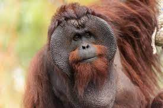

History
-
Orangutans are great apes native to the rainforests of Indonesia and Malaysia. They are now found only in parts of Borneo and Sumatra, but during the Pleistocene they ranged throughout Southeast Asia and South China. Classified in the genus Pongo, orangutans were originally considered to be one species. In 1996, they were divided into two species: the Bornean orangutan (P. pygmaeus, with three subspecies) and the Sumatran orangutan (P. abelii); a third species, the Tapanuli orangutan (P. tapanuliensis), was identified definitively in 2017. The orangutans are the only surviving members of the subfamily Ponginae, which diverged genetically from the other hominids (gorillas, chimpanzees, and humans) between 19.3 and 15.7 million years ago.
The most arboreal of the great apes, orangutans spend most of their time in trees. They have proportionally long arms and short legs, and have reddish-brown hair covering their bodies. Adult males weigh about 75 kg (165 lb), while females reach about 37 kg (82 lb). Dominant adult males develop distinctive cheek pads or flanges and make long calls that attract females and intimidate rivals; younger subordinate males do not and more resemble adult females. Orangutans are the most solitary of the great apes: social bonds occur primarily between mothers and their dependent offspring. Fruit is the most important component of an orangutan's diet, but they will also eat vegetation, bark, honey, insects and bird eggs. They can live over 30 years, both in the wild and in captivity.
Orangutans are among the most intelligent primates. They use a variety of sophisticated tools and construct elaborate sleeping nests each night from branches and foliage. The apes' learning abilities have been studied extensively. There may be distinctive cultures within populations. Orangutans have been featured in literature and art since at least the 18th century, particularly in works that comment on human society. Field studies of the apes were pioneered by primatologist Birutė Galdikas and they have been kept in captive facilities around the world since at least the early 19th century.
All three orangutan species are considered critically endangered. Human activities have caused severe declines in populations and ranges. Threats to wild orangutan populations include poaching (for bushmeat and retaliation for consuming crops), habitat destruction and deforestation (for palm oil cultivation and logging), and the illegal pet trade. Several conservation and rehabilitation organisations are dedicated to the survival of orangutans in the wild.
- Taxonomy:
The orangutan was first described scientifically in 1758 in the Systema Naturae of Carl Linnaeus as Homo troglodytes.[8]: 20 It was renamed Simia pygmaeus in 1760 by his student Christian Emmanuel Hopp and given the name Pongo by Lacépède in 1799.[8]: 24–25 The populations on the two islands were suggested to be separate species when P. abelii was described by French naturalist René Lesson in 1827.[18] In 2001, P. abelii was confirmed as a full species based on molecular evidence published in 1996,[19][20]: 53 [21] and three distinct populations on Borneo were elevated to subspecies (P. p. pygmaeus, P. p. morio and P. p. wurmbii).[22] The description in 2017 of a third species, P. tapanuliensis, from Sumatra south of Lake Toba, came with a surprising twist: it is more closely related to the Bornean species, P. pygmaeus than to its fellow Sumatran species, P. abelii.[21]
Head shots of male Bornean, Sumatran and Tapanuli orangutans
Flanged male Bornean, Sumatran and Tapanuli orangutans
The Sumatran orangutan genome was sequenced in January 2011.[23][24] Following humans and chimpanzees, the Sumatran orangutan became the third species of great ape whose genome was sequenced. Subsequently, the Bornean species's genome was sequenced. Bornean orangutans (P. pygmaeus) exhibit less genetic diversity than Sumatran orangutans (P. abelii), despite the latter's population being six to seven times greater. The researchers hope these genetic data may help conservationists preserve the endangered ape, as well as learn more about human genetic diseases.[24] Similarly to gorillas and chimpanzees, orangutans have 48 diploid chromosomes, in contrast to humans, which have 46.[25]: 30
According to molecular evidence, within apes (superfamily Hominoidea), the gibbons diverged during the early Miocene between 24.1 and 19.7 million years ago (mya), and the orangutans diverged from the African great ape lineage between 19.3 and 15.7 mya. Israfil and colleagues (2011) estimated based on mitochondrial, Y-linked, and X-linked loci that the Sumatran and Bornean species diverged 4.9 to 2.9 mya.[26]: Fig. 4 By contrast, the 2011 genome study suggested that these two species diverged as recently as circa 400,000 years ago. The study also found that orangutans evolved at a slower pace than both chimpanzees and humans.[24] A 2017 genome study found that the Bornean and Tapanuli orangutans diverged from Sumatran orangutans about 3.4 mya, and from each other around 2.4 mya. Millions of years ago, orangutans travelled from mainland Asia to Sumatra and then Borneo as the islands were connected by land bridges during the recent glacial periods when sea levels were much lower. The present range of Tapanuli orangutans is thought to be close to where ancestral orangutans first entered what is now Indonesia from mainland Asia.
Specifications
- Kingdom: Animalia.
- Order: Primates.
- Genus: Pongo.
- Family: Hominidae.
- Class: Mammalia.
Anatomy and physiology
Orangutans are mainly arboreal and inhabit tropical rainforest, particularly lowland dipterocarp and old secondary forest.[36][45] Populations are more concentrated near riverside habitats, such as freshwater and peat swamp forest, while drier forests away from the flooded areas have fewer apes. Population density also decreases at higher elevations.[25]: 92 Orangutans occasionally enter grasslands, cultivated fields, gardens, young secondary forest, and shallow lakes.[45]
Most of the day is spent feeding, resting, and travelling.[46] They start the day feeding for two to three hours in the morning. They rest during midday, then travel in the late afternoon. When evening arrives, they prepare their nests for the night.[45] Potential predators of orangutans include tigers, clouded leopards and wild dogs.[25]: 91 The most common orangutan parasites are nematodes of the genus Strongyloides and the ciliate Balantidium coli. Among Strongyloides, the species S. fuelleborni and S. stercoralis are reported in young individuals.[47] Orangutans also use the plant species Dracaena cantleyi as an anti-inflammatory balm.[48] Captive animals may suffer an upper respiratory tract disease.
Communication
-
Orangutans communicate with various vocals and sounds. Males will make long calls, both to attract females and to advertise themselves to other males.[40] These calls have three components; they begin with grumbles, peak with pulses and end with bubbles. Both sexes will try to intimidate conspecifics with a series of low frequency noises known collectively as the "rolling call". When uncomfortable, an orangutan will produce a "kiss squeak", which involves sucking in air through pursed lips. Mothers produce throatscrapes to keep in contact with their offspring. Infants make soft hoots when distressed. When building a nest, orangutans will produce smacks or blow raspberries.[61] Orangutan calls display consonant- and vowel-like components and they maintain their meaning over great distances.[62]
Mother orangutans and offspring also use several different gestures and expressions such as beckoning, stomping, lower lip pushing, object shaking and "presenting" a body part. These communicate goals such as "acquire object", "climb on me", "climb on you", "climb over", "move away", "play change: decrease intensity", "resume play" and "stop that".